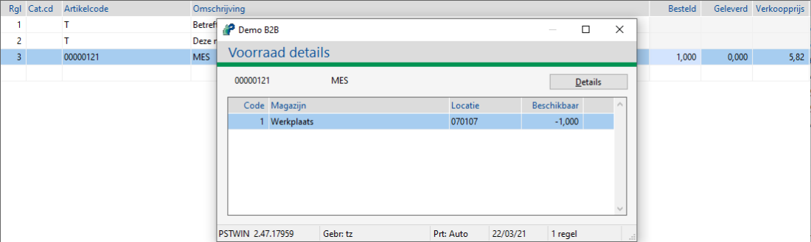

Om een nieuw magazijn aan te maken, ga naar Onderhoud magazijnen (ABM).
In dit hoofdstuk staan de meestgestelde vragen over de voorraad of magazijn module.
Het is mogelijk op Powerall te koppelen met een geautomatiseerd magazijnsysteem zoals Modula, Kardex of Händel lift, zogenaamde VLM's (Vertical Lift Modules).
Om een nieuw magazijn aan te maken, ga naar Onderhoud magazijnen (ABM).
| Servicebussen / Multimagazijn | Optie voor het gebruik van meerdere - / multi magazijnen en/of servicebus(sen): - Nee (standaard), veld magazijn is grijs en het standaard magazijn. - Ja, het veld is invulbaar. |
Opmerking: Neem contact op met onze helpdesk om te inventariseren of dit binnen uw organisatie toepasbaar is. Zij schakelen in overleg de planning in, om een consultant in te plannen.
Ja dit is mogelijk, voor meer info zie:
Het volgende geldt bij een standaard magazijn:
Het standaard weergave magazijn wordt bij Instellingen artikelen tabblad Voorraad/Bestelmethodiek ingevuld.
Per gebruiker instelbaaar.
Per module instelling instelbaar
Bij gebruik van bedrijfslocatie kan per locatie een eigen magazijn gekoppeld worden. Als deze gekoppeld is aan een gebruiker, wordt dit magazijn als standaard gebruikt.
Bij het gebruik van servicemeldingen i.c.m werkorders geldt de volgende instelling:
| Voorkeur werkordermagazijn | Optie het magazijn bij aanmaken van een werkorder, vanaf versie 3.24. - Monteur magazijn (standaard) - Hoofdmagazijn, standaard wordt het magazijn uit de instelling WO gebruikt. NB Bij het gebruik van Bedrijfslocaties, wordt altijd het werkorder magazijn van de betreffende locatie gebruikt. |
Opmerking: Neem contact op met onze helpdesk om te inventariseren of dit binnen uw organisatie toepasbaar is. Zij schakelen in overleg de planning in, om een consultant in te plannen.
Dit is mogelijk met - en zonder gedeelde bestanden.
Opmerking: Neem hiervoor contact op met de helpdesk.
Journalisering en bijwerken voor GIP en LIP met instelling 'moment van bijwerken' is 'matching'.
In deze methodiek wordt ontvangsten voor de GIP/LIP ook zo gejournaliseerd.
Er wordt dus geen prijsverschil geboekt, ook niet bij een afwijkende ontvangst.
Het gehele prijsverschil wordt geboekt bij de matching (op rekening voorraad).
Deze methodiek/instelling is bedoeld voor bedrijven waar de inkoper/ontvangst echt een beperkt beeld heeft van de daadwerkelijke prijs. Het heeft dan geen toegevoegde waarde al bij ontvangst te gaan boeken.
Ook voor situaties waar bij ontvangst kostprijs geautoriseerd is.... dan weet je ook nooit (zichtbaar) wat er gebeurt, behalve als de inkoper alles heel 'strak' in de inkooporder heeft staan.
Ja, dit is mogelijk bij de volgende programma's, indien ingesteld:
Het scherm Voorraad details verschijnt als de voorraad negatief loopt bij de instelling Melding voorraadniveau is lijst.
| Melding voorraadniveau | Optie voor melding (negatief) voorraadniveau: - Nee (standaard) - Ja, het scherm Waarschuwing voorraadniveau (voorraad > maximum voorraad) verschijnt. - Lijst, het scherm Voorraad details verschijnt. |

Dit is mogelijk per magazijn, per artikel bij:
Tip: Gebruik de uitvouw knop  (boven U bent hier:) om alle vragen uit - of in te vouwen.
(boven U bent hier:) om alle vragen uit - of in te vouwen.
Gerelateerde onderwerpen
Copyright ©